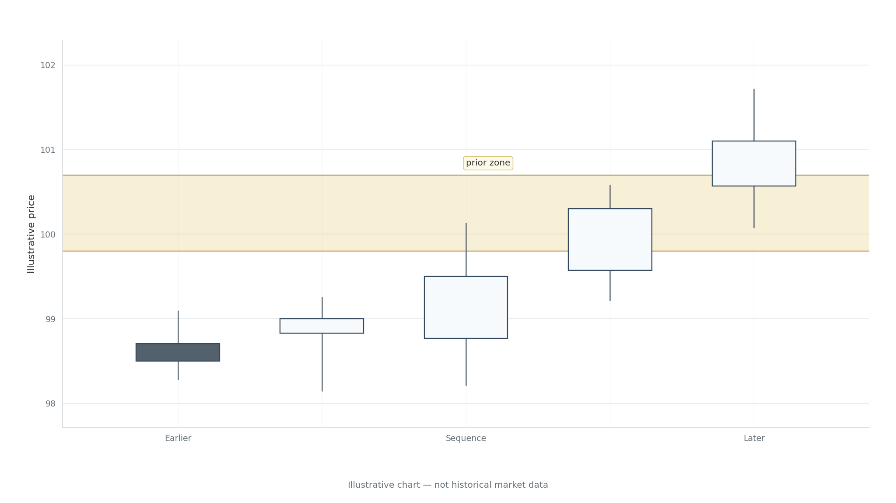

MODULE 5 · LESSONS 12–14
A breakout is one moment.
The next candles matter too.
A move through a level raises a question, not an instant answer. Each lesson puts its first chart beside the question; record your read before later candles are revealed.
30–35 min
12. Breakout or Temporary Penetration?
A close beyond a line is evidence. It is not a verdict.
By the end, you should be able to
STAGE 1 OF 3
Before the break

YOUR DECISION RECORD
THE WORKBOOK
Field notes · Lesson 12
These fields exist for a reason: they preserve what you believed before the later candles appeared, and what evidence made you reconsider. “Unclear” is an acceptable conclusion when the evidence is mixed.
Close this section and explain the lesson aloud in three sentences: what happened, what you inferred, and what could make you change your mind.
KNOWLEDGE CHECK
Can you defend the reasoning?
Choose the most defensible response. Automated feedback appears after you submit every answer.
MODULE 5 CLOSE
Let the next candles inform your view.
A move beyond a zone gives you something new to study. A return, a lack of follow-through, or later movement that holds outside can strengthen or weaken your reading. None of these events guarantees a trade.